Case Study: Workday App
Making the app more user friendly.
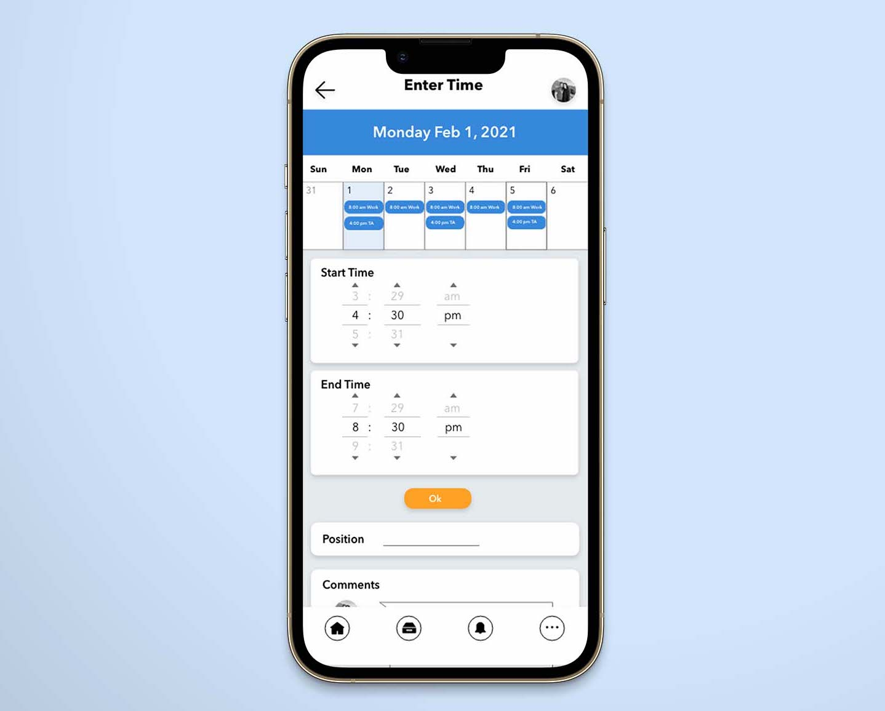For this project, we were to research an existing app or website that needed work/to be redesigned. For this project, I chose Workday. After conversing with friends who work with Workday for their employment. They showed me the problems that they encountered and I redesigned these and their feedback throughout this project.
During this process, I discussed the app with people who use it reguarly to understand the issues that it had and the areas that could be improved. As I began to redesign each section, I would do a small user test to make sure the design was userfriendly and appealing.
Role: UX Designer
School: Brigham Young University - Idaho
Date Completed: March 2021
The Problem:
"The Workday app provides secure, mobile access to your Workday applications on-the-go." -App Store Desciption
The Workday app is an app designed to help workers and employers manage their time, clock in and out, see announcements from their place of work, request time off, and much more. My goal is to fix several UX design problems to make the user experience stressfree and simple.
Areas to Work on:
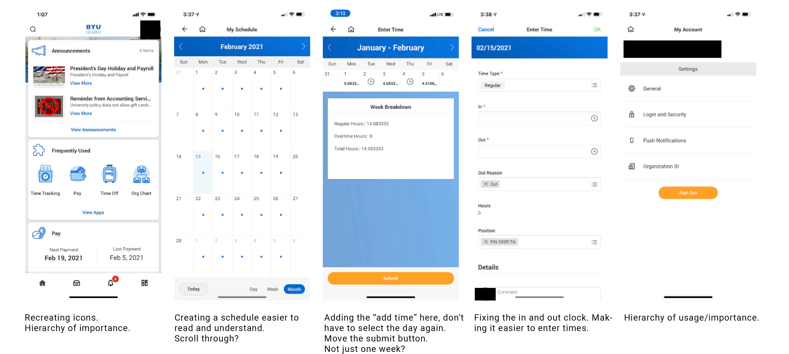My goal is to create logos that are more simple yet get the point across. and use the same icons throughout the app. I also want to put the different sections in a hierarchy of importance while also limiting the space they take up.
Research:
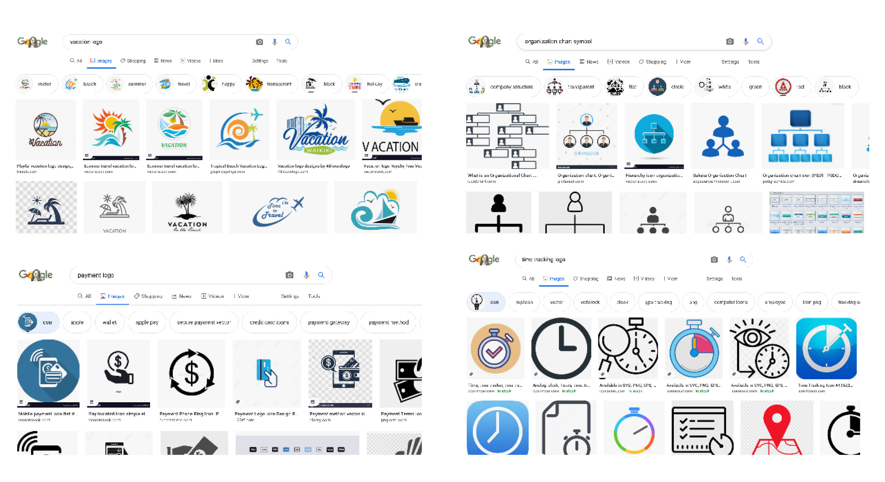Before:
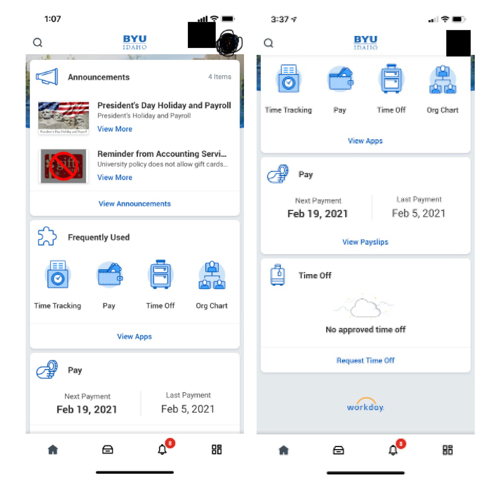I researched other designs for each icon that I planned to recreate. Here are some of the results I found as well as some ideas I created for the new icons.

After:
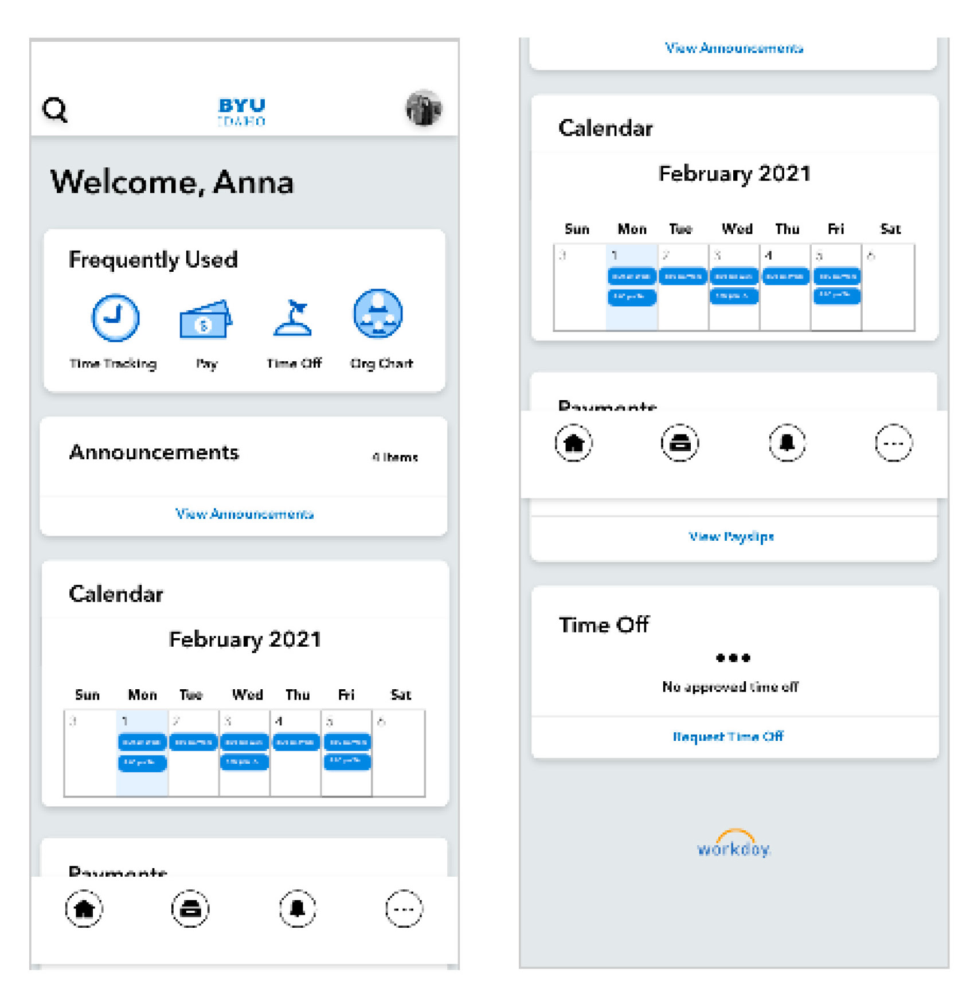In the final result, I redesigned the front page to make it look clean and organized. I redesgined some of the icons and created a hierarchy based on the importance and usage and added a section to see the calendar.
Before:
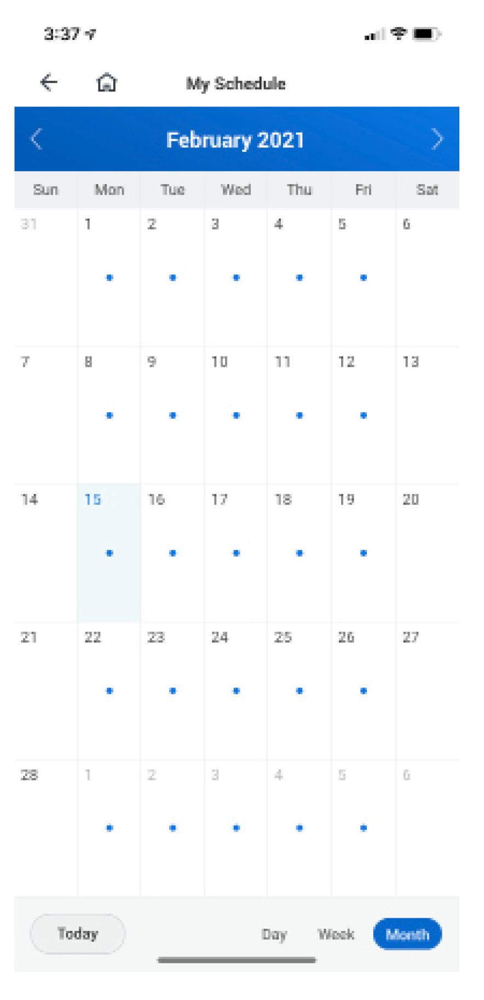The calendar design was edited to make it more visually appealing and allow for information to be seen without have to select each day individually.
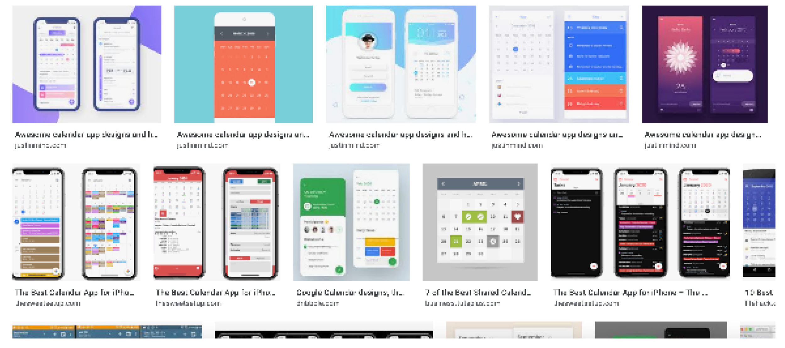To be able to redesign the calendar to be the most effective, I researched a bit about different calendar layouts and also asked people who use the Workday app about their experience using the calendar feature. This helped me to create a more effective calendar layout and fit the needs of those using the app.
After:
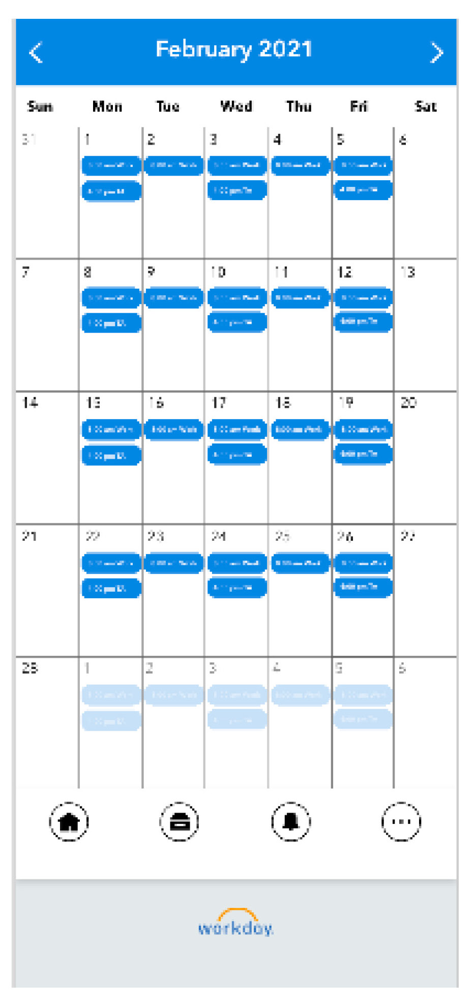For the calendar redesign, I decided to add events/work hours that can be easily read without selecting each individual day. It is now easier to see the schedule for the whole week or month.
Before and After:
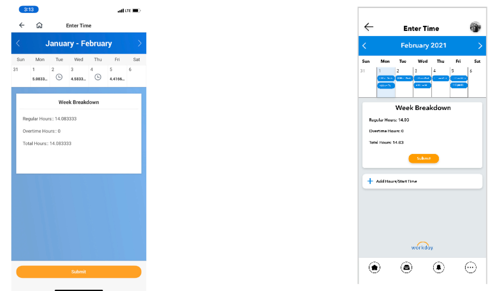On the right is the before image, on the left is the redesign. For this page, I again talked with people who were currently using the app. There were quite a few issues that came up and my plan for the page was to make it more useful. It should atomatically select the current day and allow the user to select to input their time worked on this page, as well as reposition the submit button.
I continued to use the same design from the calendar page and rearanged a few things such as the submit button and added a "Add Hours/Start Time" to the page as well.
Before:
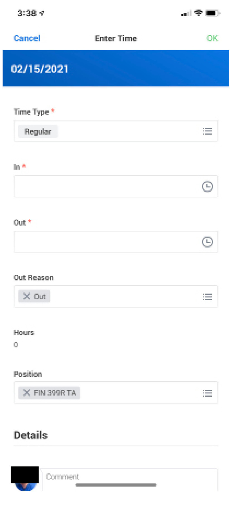I plan on making it easier to enter time, both for clocking in and clocking out. The main problem that I found when discussing this feature with other people was that it was difficult to enter time and change the entered time and that it was confusing. My plan is to make it more user friendly.
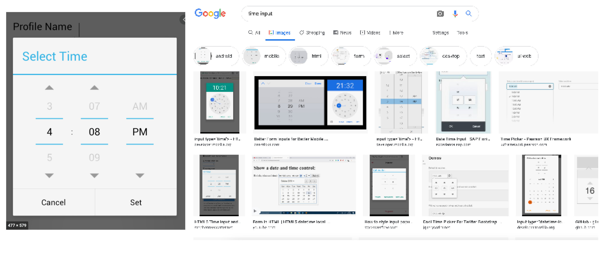Again I reseached other designs for clocks, ways to display time and for inputting time. Above are some ideas I found.
After:
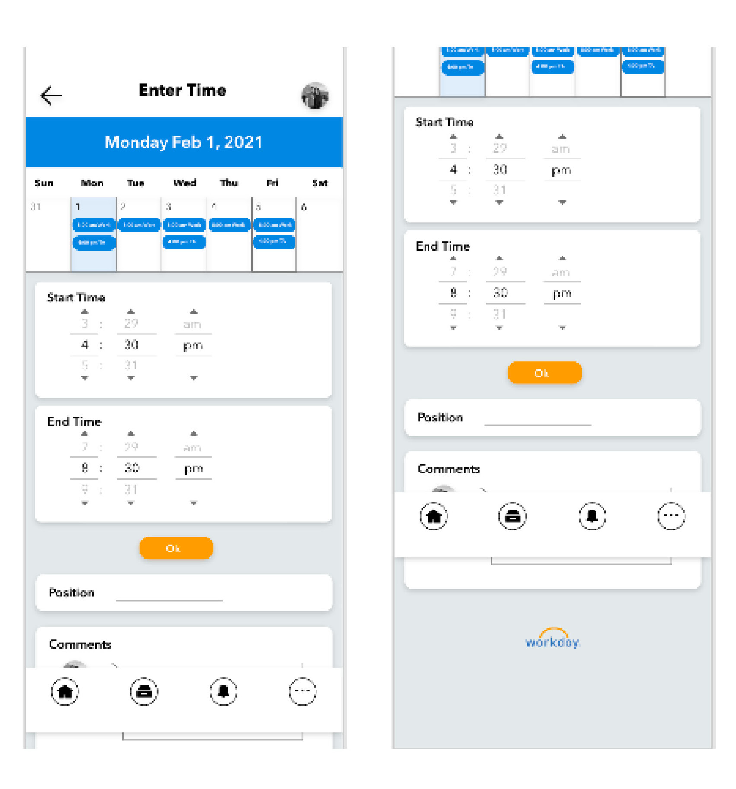On this page, I continued to use the same calendar set up, and recreated the time inputsection. I made this page neater and more userfriendly becuase it is easier to navitage.
Before:
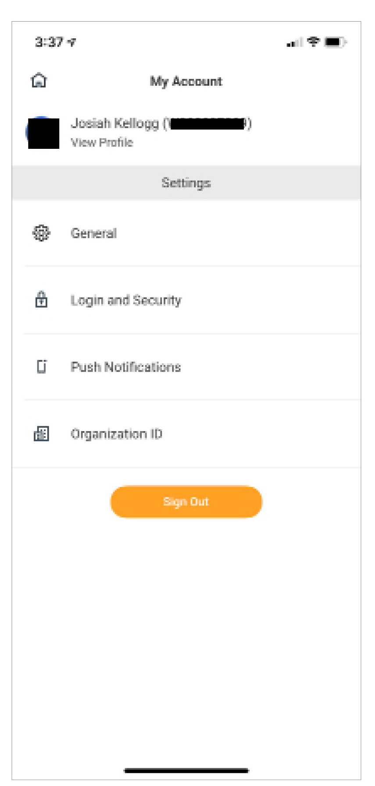My goal for the "My Account" page of the app was to reorganize the sections by moving the "Organization ID" to the top so it is easy to locate, and make the whole layout clean and neat.
After:
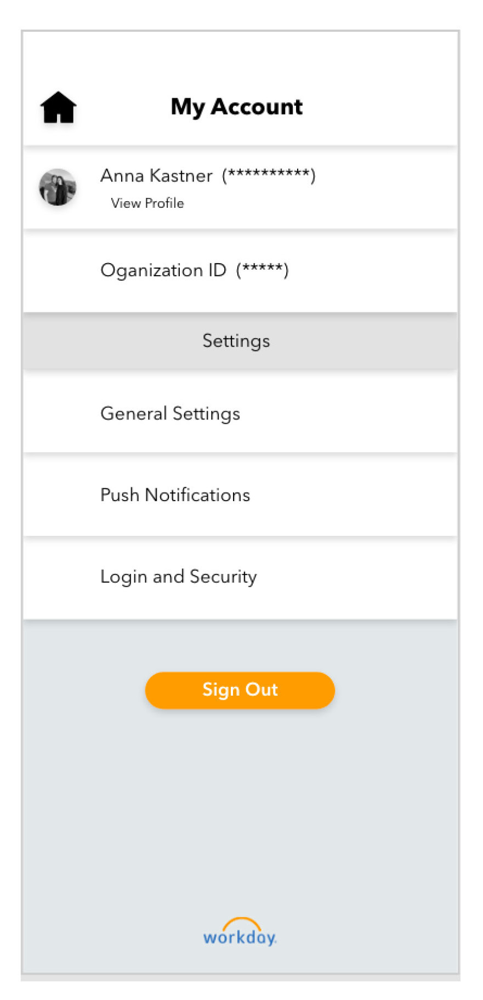Here is the end result, it has a similar feel to the rest of the app with the colors and layout. It is meant to feel more organized with the sections ordered by heirarchy of importance.
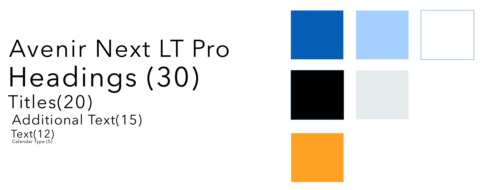Above are the main font styles and colors I used in the redesign.
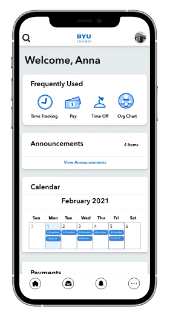